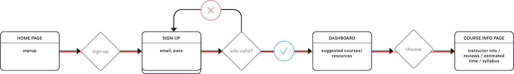
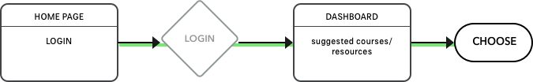
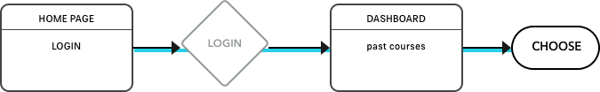
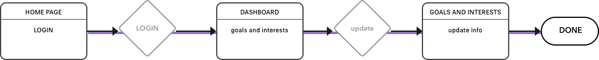

Charter
User Experience design & Branding
People don't need to spend thousands of dollars while they are figuring out what they want to do with their lives, that can happen when they are confident that they have found the right path for them. Use Charter to explore your future and chart your course.
Design Role
- UX Design
- Visual Design
- Branding & Identity
Deliverables
- User Surveys
- Personas
- User Stories & Flows
- Competitive Analysis
- Paper Prototype
- Wireframes
- User Testing
- Visual Design
Tools
- Sketch
- InVision
- Photoshop
- Illustrator
- Usability Hub
- Maze
- Zeplin
Problems
- 1. It takes a lot of time to search for free resources of quality.
- 2. It's expensive to explore different career paths or interests.
- 3. Knowing the quality of a videos contents can be difficult.
- 4. Saving courses from multiple sites can be hard to keep track of.
Insights
Most of our users go to third party sources to find reviews on courses or content and they often spend 2-4 hours searching for decent material. Some people even said they spent more then a week looking for ‘okay’ resources - thats just way to much time - and most of them ended uopaying for courses.
Solutions
- 1. Create a site that collects courses and tutorials from other sites.
- 2. Let the users decide why they are wanting to learn material and then proved them with suggestions.
- 3. Show reviews for instructors and courses.
Assumptions
I made some general assumptions about people and resouces online:
- 1. People want to learn new skills;
- 2. but they aren't always sure its the path they want to take;
- 3. If they are Unsure if a career path they don't want to spend money because there is chance they end up not pursuing the path; and
- 4. There are tons of free resources out there but its hard to tell which are good.
Now-a-days I feel like most people have taken a course of some sort online. Some people have even tried to figure out if they like a certain career path by taking courses online. But it can be wuite difficult to do so. I’ve tried. Finding resouces that give you a good taste of any job market can be impossible at the very least you can find okay resouces to see if you have minial interest. I know I wanted an easier, cheaper way to learn what career oath i was most interested in… College is just too expensive for expiramenting.
User Research
100%
of people who took the survey have searched for or used free educational resources online.
69%
prefer courses, 88% perfered videos, 75% perfer articles.
46%
of them said they spend 2-4 hours searching for the right resources.
71%
said they wished better resources were suggested to them
65%
said that third party reviews and instructor bios weighed on their decision to take a course heavily.
44%
Said they were searching for educational resources to advance in their career.
* Percentages based on 36 user responses
User Personas
Jessy
A 27 Y/O Full-time Developer
Goals
I’m good at my job and I love what I do, but my industry is always changing and I need to keep up with industry standards. That means I always have to know what the new things are like fresh college students. But I can’t just stay in college.
“I would love to have something all in one place instead of me digging in my bookmarks.”
Frustrations
Since I’m expected to always know the new things I end up spending a greta deal of time searching for articles and saving them because I’m not sure if they are the best or not. This often leaves me with over ten tabs open and hunderes of bookmarks that never get read.
Kayla
A 23 Y/O part-time Research Assistant
Goals
I’m not completely sure what I want to do with my life. Some of my friends have told me to just go to college and suck it up, but that seems like an expensive way to expierament. So anything to make that easier would be great.
“I need a cheap way to try out a lot of different life paths.”
Frustrations
Its so expensive to pay for a tradtional educationa and most places don’t even care what your degree is - not to mention it’s near impossible to know what quality education you’ll get.
Competitive Analysis Highlights
The education industry is always hard to break into because people have so many different needs, but our users said they use and like these three sources the most. So lets see what are they doing right and wrong? Breaking down their strengths and weaknesses will help us figure out how our educational platform will hold-up.
Check out the full compentive Analysis hereUser flows & User stories
Now that we know people want to have courses suggested to them and an easier way to find quality resources that are free. It’s a good time to created user stories to highlight the main features of the product. The user stories were then converted into User flows done in Sketch, to illustrate how the user would interact with the product and accomplish those goals.
Check out user stories broken down into flows here and all of the flows as one hereAs a New User I want to sign-up so that I can save the courses that were curated for me and remove the ones I’m not interested in.
As a Returning User I want courses or resources to be suggested to me based on my interests so that I can steam line my learning process.
As a Returning User I want to See what courses I have taken in the past so that I can revisit them if I free like I need to brush up on skills.
As a Returning User I want to update my interest so that I can recieve suggested courses that fit my new interests.
Visual Design & User Testing
Logo Design
Color Palette
The palette is made up bright fun colors. Blue is the primary link color and black for text. Other than that the other colors are mostly to be used in gradients and for enphisis. The idea is to keep the site feeling fun and energetic.
Fonts
IBM PLex is a neutral, yet friendly Grotesque style typeface that balances design with the engineered details.
Wireframes
With my user stories and flows in place, I can begin sketching.
Nice! Now have a basic structure and some hierarchy, after a couple of quick user tests with the wireframe prototype I found that the Initial signup process was too long. I was asking for information like location and bio, which was unnecessary. So I removed that screen, and instead of making people choose their interests and their goals during the onboarding process I split that into two different sections that they can decide to go through and then later add more information from their dashboard.
View wireframe prototypeUser testing
The video below is one of the six user tests I conducted.
While I was creating the high-fidelity wireframes I was able to get a few user tests in and A&B tests to validate the confusing instances. Above is a video of one of the 6 remote user tests I conducted. Some of the biggest take ways from initial user tests were that the search bar wasn’t obvious, pricing on courses didn’t make sense, and not all of the clickable items seemed clickable.
Iterations
Here is some of the different versions charter has gone threw, paired with some quotes from user tests and resoning for the changes.
Index, Search and hero section
Iteration 1
1. “Fun but very feminine”
2. “Are the things in the bubbles the only types of courses on this site?”
3. “Why isn’t there a search bar?”
Iteration 2
1. “what us this site for?”
2. “Why do you ask me what I want to learn without giving me somewhere to type?”
Iteration 3
Adding some “no-brainders, like the “search” text so that people are like “oh, hey, I can search here if I want”. Simple solutions so my users don’t have to do any thinking - Until they choose a course.
I tested this screen with a click test through usability hub with the promt “How would you find a course on french on this site?” out of 7 useres who had never seen the site 5 clicked on the search bar and one clicked on see more. The last person clicked on a random part of the backdrop.
Course Info Page
Iteration 1

Iteration 2
Iteration 2
These are the seven changes that were made in the course page.
1
Adding a back arrow made it more obvious when skimming the page that this is a backlink
2
Changing the sub-nav color to blue made it consistent with other clickable items.
3
Moving “View course on EdX” to a new line solves for cases when the provider name is longer and won’t break the layout.
4
Separating Certificate and Course costs made it more evident to the user what they need to pay for vs. what is optional.
5
Putting the Instructors on cards like the courses made it evident to the users that they were in fact clickable.
6
The previous tags were commanding too much attention for their importance level. This solution of making the buttons 90% transparent made them less prominent on the page.
7
Previously related courses looked like they were a part of the course information, to solve this I gave associated courses own their sections with this familiar swoosh and colored background that you see other places around the site.
User Dash - Career Path Card
Iteration 1
The first iteration of the career advancement path was cluttered and demanded a lot of attention.
Iteration 4
This is the last iteration in place on the dash. Look how far its come!
Iteration 2
The second was very clean, but took up the full width and seemed like it lacked information.
Iteration 3
The third card was half size so that users could leisurely skim through multiple paths if they chose to have more then one and added a view button to make it utterly obvious that they can view more info.
Iteration 4
For the final path card, I added numbers as users expressed that they want more linear structure and dropped the number of courses and hours down to the second line.
Class Card hover state for the Career path page
Iteration 1
Iteration 2
One of the features of Charter is that people can create paths based on certain goals and if they happen to have a class added to a path that they have taken before they can swap it out. But people thought this swap button was for redoing the course in the first iteration.
In the second iteration, this fun but straightforward swap button cleared up confusion [I mean words make sense most of the time].
Final Product
Lets put all of that branding and user testing to work.
Conclusion
Where do I start? Education is a very complicated part of our lives we all learn in different ways, and there are an endless number sites and methods to learn anything you want. So education is a pretty serious topic, but serious isn't motivating. So charter set out to make this serious and stressful experience more fun and at the very least more straightforward.
Charter fits into the education market in a fresh new way. We aren't trying to push you into buying some course that you may find you're not interested in halfway through. Instead, we collect all of the free classes online and when you tell us what your goal is we create a path for you to do learn that thing. So you have no downside, and if you want to explore different career paths, you can do that without stress and then choose to pay for more in-depth classes later when you know you want to take that path in your life.
LESSON Learned
Throughout this process, I learned so much about people and what they expect from simple sites. For example, even after the site purpose was explained to a few users, they still wanted the website to do more, like take notes and be their calendar. So one big takeaway was that if there is an all-in-one solution people will take that over a perfect partial solution. Secondly, I learned that small word changes in a user test could have a considerable difference in what people do. For Example, I ran two A and B tests for testing the search function one with the prompt “How would you learn French on this site?” and one with the prompt “How would you find a French course on this site?”, The second one went better and received far fewer comments about the prompt and more about the site. Then, the need for people to be able to explore life paths more freely is highly sought after. So many people want to explore what its like to be different things without paying thousands of dollars or spending hundreds of hours to find out it's just not for them. Let's create more meaningful products that solve issues like this; we deserve it.
Like my work? Lets connect!